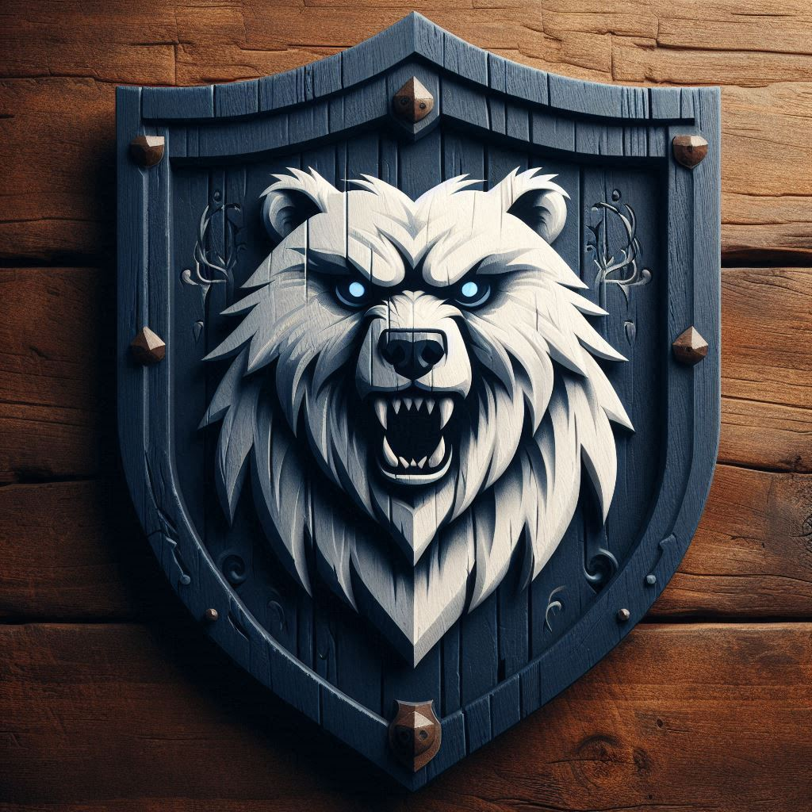
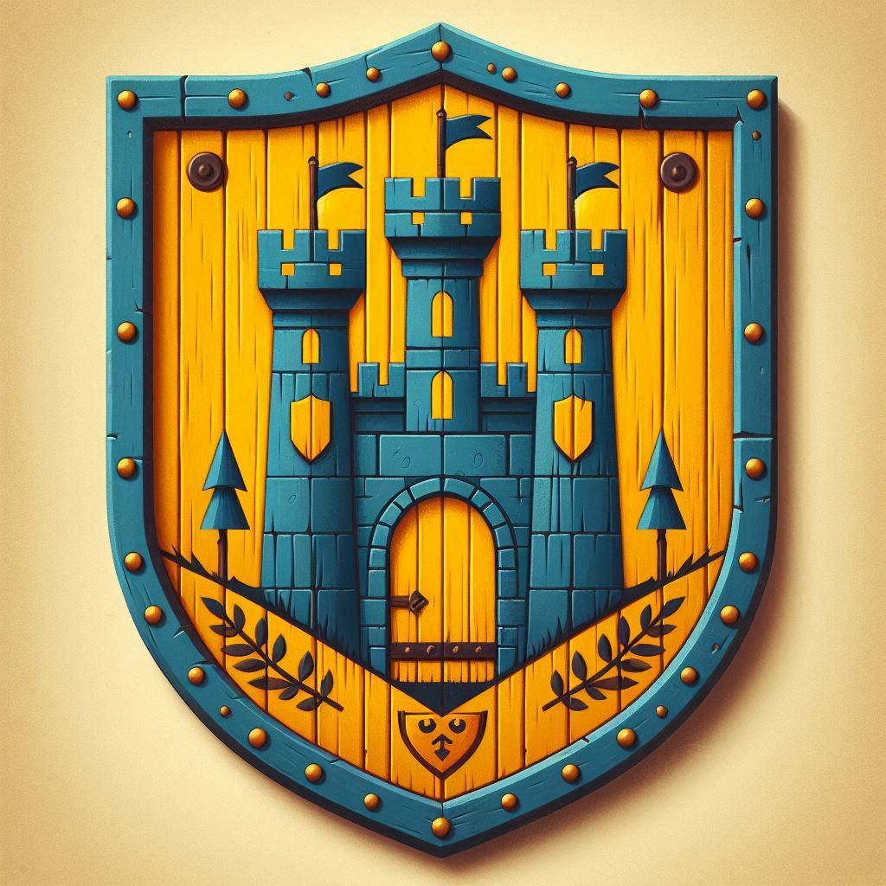
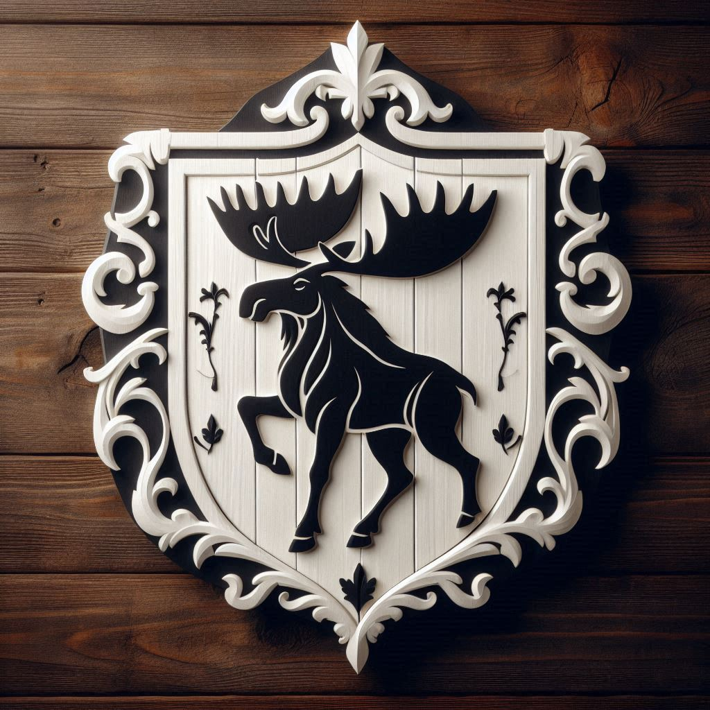
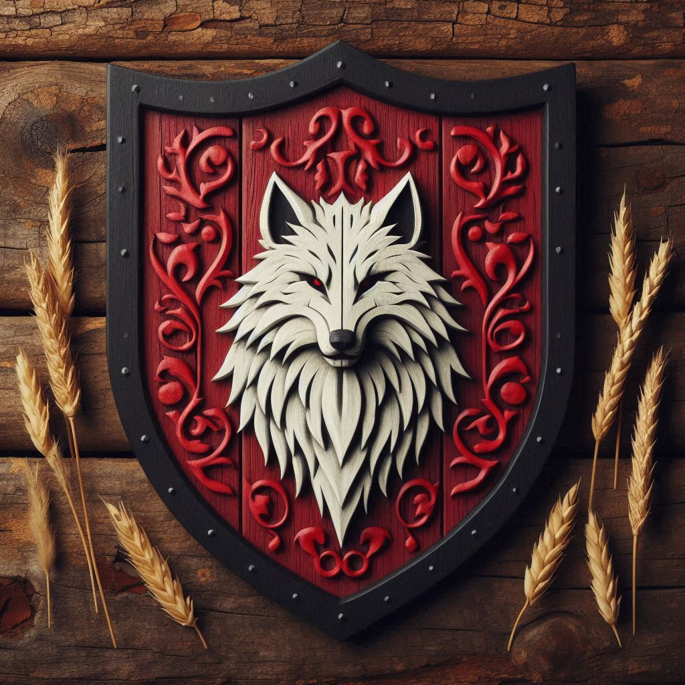
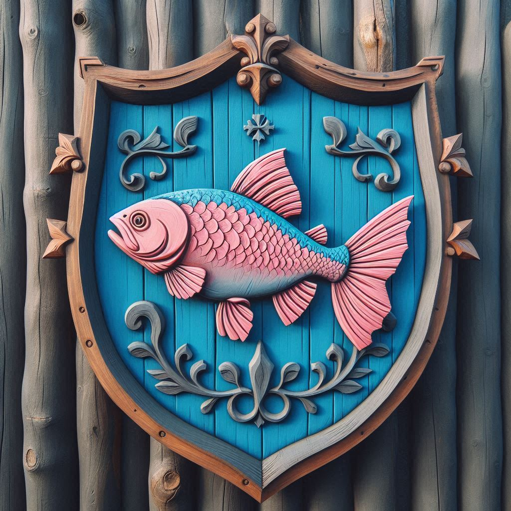
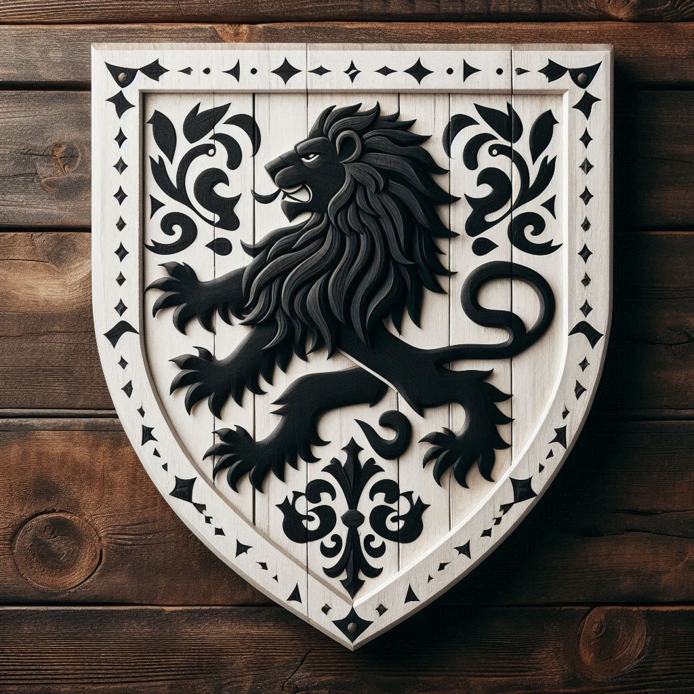

En las heladas tierras del Norte, entre imponentes montañas y bajo un clima implacable, se yergue un país marcado por la ferocidad de sus sangrientas guerras entre clanes.
Tras la Gran Rebelión y la Expulsión de los heterocromos, durante la Era del Caos, Dareniel se mantuvo largos años al servicio de la guerra. Si bien ya habían recuperado la libertad, gobernarse a sí mismo no era tarea fácil y los siete señores de la guerra más importantes se habían adueñado de un territorio cada uno, con unos límites que a menudo no coincidían con los del vecino, fortificando en ellos sus fortalezas y reforzando sus respectivas casas.
Los Sorenborg, cuyo escudo es un castillo azul sobre fondo amarillo, fueron los señores del castillo de Rikkel y reclamaron como propias todas las tierras al este de la cicatriz de Gaia, hasta la Cortina de Unng y Las Escondidas. Los Maarensen, alce negro sobre fondo blanco, reclamaron la costa Oeste, con la ciudad de Marblan como base. Los Lungene, una trucha rosada en un fondo azul, se apoderaron de los lagos del norte, epónimos de su apellido desde entonces. Sander Ledenard, un león negro sobre fondo blanco, se hizo con Altsadum, la ciudad más grande y más poblada, desde donde gobernaban los heterocromos la región norteña en los tiempos imperiales. Kaja Aasenborg se adueñó de Aaniel, la ciudad más reciente y próspera. Fridda Blinbuld se hizo con la zona del Turemis, reclamando toda su orilla, pero efectivamente controlando solo dos grandes ciudades como Tuur y Troming. Los Grengoveld, con Pugo como rey, se hicieron con la parte que nadie parecía querer, el sur. Era la zona más conflictiva con el exterior y para los norteños era considerada como un territorio vacío y de gentes diferentes.
Para el año 10 d.E. los conflictos internos ya habían estallado por todas partes y estaban diezmando al recién creado país. Mientras tanto, la religión limerea iba ganando poder. La construcción de la Basílica del Voto Divino iniciada en el año 2 d.E. era visitada por peregrinos desde que se puso la primera piedra. Fue el Pontífice de Dareniel, que según se cuenta había sido colocado por una bruja de belleza divina, quien unió a los Siete Grandes Señores en Altsadum y los convenció para que dejaran de pelearse y nombraran a un Rey. Las negociaciones empezaron en el año 23 d.E., cuando la guerra ya llevaba más de veinte años arrasando el país.
Las negociaciones no fueron fáciles, y duraron siete años, pero al final Sander Ledenard fue coronado monarca y casi todos le juraron lealtad, todos menos el señor de los Lagos, Isak Lungene, quien decidió arrodillarse en el fondo de sus lagos antes que frente a su enemigo. Desde entonces es conocido como el Rey Ahogado, Nunca Arrodillado. Todos los años en las fiestas patrias de los Lagos se conmemora su sacrificio.
Antes de que los Siete Señores se reunieran en Altsadum con frecuencia para discutir sobre la paz, sus soldados se libraban batallas de lo más sangrientas. Y también durante los siete años que duraron las negociaciones de paz.
La Trucha y el León
La guerra de la trucha y el león, así fue como se llamó a la serie de incursiones de las truchas, los Lungene de los Lagos, a la ciudad más grande del Norte, Altsadum, gobernada por Sander Ledenard. Isak Lungene, el Señor de los Lagos era un hombre un tanto peculiar. Nada más instalarse en sus tierras, nombró a todos los lagos del territorio “Lungene”, causando así gran confusión entre los habitantes, viajeros y mercaderes. El maestre del castillo dejó escritas algunas de sus costumbres de lo más reveladoras. Nada más levantarse, Isak lo hacía llamar para dictarle cartas para las truchas, a quienes pretendía convencer con ellas de que salieran de los lagos por sí solas y se dejaran cocer al sol. A menudo hacía azotar a perros y caballos por mirarle mal. Isak tenía quince esposas y, si las cuentas del maestre fueran correctas, habría tenido setenta y dos hijos con ellas, sin contar los bastardos que hubiera engendrado en los muchos burdeles en los que era bien conocido.
Cuando Isak se enteró de que en la capital llamaban a los habitantes de los lagos “truchas” y que la palabra tenía una connotación negativa, envió a todo su ejército a tomar la urbe. La cosa no acabó bien para su ejército, que tuvo que retirarse entre risotadas enemigas. Sus consejeros le aconsejaron entonces una estrategia diferente, y sus hombres se dedicaron a saquear las aldeas de las tierras de los Ledenard. Los Ledenard respondían con la misma medicina.
La guerra de las Mujeres
Esta guerra opuso a la Señora de Aaniel, Kaja Aasenborg, y la Dama del Turemis, Frida Blinbuld, que había construido su palacio en Troming. Un pueblo de la región del Turemis celebró un banquete tras varios cazadores haber traído medio centenar de jabalíes y jabatos. Al día siguiente, cientos de aldeanos de las tierras fronterizas de los Aasenborg acudieron a dicho pueblo y liquidaron a casi todos los habitantes, alegando que los cazadores de los Blinbuld habían entrado en una zona protegida de sus bosques. Aquello degeneró en una guerra en el año 3d.E. en la que ambas Señoras creían que podrían expandir sus dominios. Ninguna lo hizo.
La guerra de los suegros
Así llamaron los historiadores al enfrentamiento que protagonizaron los Sorenborg, Señores del Este, con los Grengoveld, Señores del Sur. Pugo Grengoveld, el autoproclamado rey del Sur de Dareniel, había casado a su hijo Stygg con la princesa del Este, Gyda Sorenborg. Ambas familias tenían una muy buena relación, y se organizaban a menudo banquetes en las tierras de uno y otra a medida que se celebraban otras bodas y se anudaban más lazos entre las casas.
El problema vino de las diferentes tradiciones de estas casas: en el Este era costumbre que el apellido de la mujer prevaleciera cuando nacía un hijo, mientras que en el Sur era el apellido del hombre el que se heredaba. Así pues, cuando nació el primogénito de Stygg y Gyda, en el castillo de Rikkel, le pusieron el apellido de los Sorenborg, cosa que enfureció tanto a Pugo que fue a tratar el asunto personalmente a Rikkel. La inflexibilidad de Grete Sorenborg, la madre de Gyda, fue vista como un agravio por Pugo, pero lo que más le molestó fue el ver a su hijo Stygg aprendiendo a tocar el arpa en vez de practicar con las espadas. Decía que el Este no era tierra de hombres y que se encargaría de arreglarlo. Entonces, Grete anunció que no lo hospedaría en su castillo esa noche y el Rey del sur tuvo que dormir en un burdel de Rikkel en el que, según contó totalmente indignado, no había niñas. Tras esa mala experiencia, y como no estaba dispuesto a que el heredero de Stygg y Gyda (del Este y del Sur) portara el apellido de los Sorenborg, decidió secuestrarlo. Envió una partida de hombres sigilosos al castillo de Rikkel, que volvieron una luna después con el heredero llorón. El Este se levantó en armas al enterarse, en el 7 d.E. y la guerra duró veintitrés años sin un vencedor, y eso que al hijo se lo llevaron las fiebres a los seis años de empezar la guerra.
Exploradores Maarensen
Los Maarensen, si bien no participaron en las guerras de los Grandes Señores, fueron probablemente quienes más bajas sufrieron. Desde la ciudad de Marblan, en la Rada Blanca, Storm Maarensen envió a sus drakares mar adentro con la orden de saquear el archipiélago. El primer barco que regresó lo hizo con tan solo nueve hombres rapados. En cada una de sus cabezas habían pintado una letra, y cuando el maestre de la fortaleza logró ponerlas en orden se encontró con el siguiente mensaje: no volváis. Según contaron los supervivientes, en la isla cercana que habían saqueado, un templo había aparecido de la nada y siete personas extrañas habían acabado con casi todos ellos a base de magia. Storm envió a sus marinos una vez más, pero tan solo para marcar dicha isla en el mapa con un círculo rojo. Los otros drakares que se habían alejado más nunca volvieron. Hoy en día, por los escritos de la Casa Docta, sabemos que fueron los desgraciados que arribaron a las islas de Alderion y se enfrentaron a la bien desarrollada Armada Luminosa.
Las exploraciones por tierra tampoco fueron exitosas. En el norte, los exploradores enviados por Storm se toparon con las tribus de las Estepas Salvajes, y los pocos que lograron regresar narraron historias escalofriantes que a menudo describían a los exploradores que nunca volvieron como comida, ceniza o huesos. Al Este, las montañas del Khaz’Tiber se alzaban esperando a ser desafiadas, cosa que Storm pretendió con el mismo éxito que el resto de sus ocurrencias.
Ante tantos fracasos, cuando Storm había logrado reunir de nuevo un ejército para conquistar las tierras de los Aasenborg y sitiar la fortaleza de Aaniel, llegó el año 23 d.E. cuando se convocó la Junta de los Siete para hablar de paz. Con las prisas, trató de invadir dichas tierras lo antes posible, lo cual le acarreó graves y diversos errores que tumbaron su ejército y no tuvo otra opción mejor que abogar por la paz en los años que siguieron.
Sander Ledenard I (30 - 67)
Accedió al trono a sus 31 años, y murió con 68. Conocido como el Rey Fundador por el papel que jugó en la Junta de los Siete, el reinado de Sander I se centró en establecer leyes y dirigir sus políticas a la cimentación del reino. La organización territorial permaneció intacta en lo que respecta a sus fronteras internas. Los territorios de las grandes casas pasaron a ser ducados. Así, los antes autodenominados reyes obtuvieron el título de duque, y todos pagaban un pequeño tributo a la corona. Como Sander pasó a ser rey, nombró a su hermano pequeño, Goran Ledenard, duque de Altsadum, la capital. El ducado se conoció como Ducado Real, pues desde allí gobernaba el rey.
Las revueltas fueron pocas, pero todavía quedaban zonas grises en varios ducados donde el rey no tenía ningún poder. En el ducado de Rikkel, que abarcaba todo el lado oriental de la Cicatriz de Gaia, las zonas altas de las Escondidas seguían siendo territorio hostil para los hombres de los Sorenborg. En el ducado real, la Dorsal Alta seguía albergando a hombres totalmente incapaces de arrodillarse. Para colmo, tal y como pudieron comprobar los hombres del rey, los guerreros de las alturas eran fieros como lobos, y hábiles como tigres blancos. Incluso los niños guerreros eran capaces de derrotar a caballeros veteranos. Las Estepas Salvajes siguieron siendo salvajes, y la cordillera del Fan Si Fana permaneció como enclave independiente bajo el nombre de Khaz’Tiber.
El rey Sander I decidió vivir de sus riquezas y no alterar la paz que había logrado con escaramuzas en cada rincón. Se deshizo de sus ambiciones expansionistas y se dejó conquistar por los manjares de la realeza. Confió el gobierno ducal a sus duques y el gobierno central al Consejo del Norte. Tan solo acudía a avalar las decisiones importantes y rechazar toda iniciativa ligada a la conquista. Se pasó los últimos años de su vida cazando jabalíes, bebiendo vino de Alderion y fornicando con las mujeres más bellas que hacía venir de lugares exóticos. Los maestres del Norte creyeron que su muerte fue debida a alguno de esos excesos.
Basak Ledenard I (67 - 104)
Basak Ledenard I accedió al trono con 42 años y murió con 79. Durante sus 37 años de gobierno, Basak fue todo lo contrario que su padre. Él era un guerrero, y encabezaba a menudo las cargas contra los bárbaros de la Dorsal Alta, refugio de los guerreros más temibles del Norte, según contaban los bardos. Ahí se ganó su apodo de Rey Temerario, pero la suerte lo acompañó a lo largo de su vida y sobrevivió a todas sus batallas, no sin llevarse un recuerdo en cada una de ellas. Se decía que su cara era como un melón que alguien se hubiera empeñado en aporrear una y otra vez.
Su insistencia, sin embargo, se vio recompensada al final. El jefe de los Pieles Blancas, la tribu guerrera de la Dorsal Alta, lo conoció tras tantos embates, y un buen día antes de la batalla mandó llamarlo para compartir unas jarras. Existen muchas canciones de lo que sucedió durante ese encuentro. La batalla tuvo lugar con tropas reducidas de ambos lados, pues al parecer fue “por diversión” con solo aquellos guerreros que quisieran probarse. Hubo menos muertes que en las anteriores, pero aun así las hubo. Tras la batalla, se dijo que ambos salieron vencedores, pues se firmó un acuerdo bajo el cual los Pieles Blancas vivirían en paz en su Dorsal Alta a cambio de administrar cada año una cierta cantidad de guerreros al Ejército Real.
Las regiones de las Escondidas y las Estepas Salvajes siguieron repeliendo toda intentona de apropiación del reino darení. En las Estepas Salvajes, el Rey Temerario se unió a los embates de la Avalancha, la alianza que se había formado para acabar con esas tribus paganas. Y el Khaz’Tiber repelió por primera vez una hueste con fuego de dragón. Se dice que eso fue lo único que aterró a Basak Ledenard I, la visión de los dragones inundando de fuego el campo de batalla. Fue de los únicos supervivientes, aunque se llevó de recuerdo ampollas en el cráneo y nunca le volvió a crecer el pelo.
Cuando murió el duque Goran Ledenard, hubo un gran revuelo pues su hijo, el primo del rey, Fritjof Ledenard, no era muy apreciado por la familia, mientras que Emrik Ledenard, el hermano de Basak y príncipe, le había pedido que le diera el ducado. Basak hizo realidad el deseo de su hermano, otorgándole el ducado, pero Fritjof se opuso y lo cierto era que la Ley Monárquica establecía que el ducado se heredaba de padre a hijo, y en caso de no haber hijo varón, pasaba al hermano. Las cosas se volvieron violentas cuando las calles de Altsadum apoyaron a Fritjof, obligando a Basak a decidir si sofocar la revuelta o retractarse. El príncipe Emrik le dio una alternativa: un duelo en la Franja. Así se decidió el destino del ducado, y desde entonces el terreno de duelos de Altsadum se conoce como la Franja del Príncipe, pues allí murió Emrik y se cimentó la Ley de herencia del ducado de Altsadum.
Una canción popular se propagó por el reino, contando la batalla del Tiber y haciendo hincapié en el pavor del rey Basak al huir de los dragones. Considerando esto inaceptable, como si fuera un reto personal, el rey organizó una nueva expedición a la cordillera del Fan Si Fana y reunió a miles de hombres valientes para conquistar las tierras del dragón. Aquella fue su última batalla, en el 104. Sus restos fueron enviados por el Khaz Dolu con una propuesta de paz definitiva.
Sander Ledenard II (104 - 172)
Sander II accedió al trono prematuramente, a los dieciséis años, pues su padre, único hijo heredero del rey Basak, había muerto en la batalla. Así, la corona saltó una generación, ignorando a los hermanos del rey, y cayó en manos del nieto.
El de Sander Ledenard II fue el reinado más largo que conoció la monarquía darení, gobernó desde los 16 hasta los 84 años, cuando la vejez acabó con él en una noche de sueño apacible. Su primera decisión fue romper en pedazos la propuesta de paz del Khaz’Tiber y declarar que conquistaría ese territorio en honor a su padre. Si bien los primeros años de Sander II estuvieron marcados por este deseo de venganza, el fuego enemigo acabó por derretirlo. La llamada Década de Derrotas socavó la felicidad del pueblo, que empezó a atrincherarse en sus ciudades y no acudir a las levas que se sucedían cada año. El pueblo pedía paz. Paz y pan. Así se conocieron las revueltas que ahogaron al reino en el año 115, las revueltas del Pan y la Paz.
El Consejo del Norte hizo que el rey entrara en razón, y desde aquel año se dedicó a gobernar su reino con mimo y acierto. Se establecieron unos impuestos máximos para cada ducado, afin de satisfacer al pueblo, y en cambio se pidió a los duques un mayor esfuerzo. Para esto, se permitió que los duques nombraran directamente a señores en sus tierras, para que estos pudieran tributarles a ellos. Ya no era el rey el único en nombrar a condes directamente, pero también lo hizo. Concedió tierras en los límites de las Estepas Salvajes y a los pies de las Escondidas, con el fin de civilizar esos territorios y avanzar en su toma. Esta política daría sus frutos décadas después.
El rey Sander II prosiguió con la labor de evangelización que había iniciado su bisabuelo, aunque con más ahínco. Como la guerra dejó paso a la paz en la mayoría del reino, las familias dejaron de enviar a sus hijos al ejército y en su lugar los mandaron a la iglesia para dedicarse al sacerdocio. En el año 120 se incluyó al Pontífice en el Consejo del Norte, haciendo de la religión un asunto de los más serios. Empezó a correr el rumor de que una bruja susurraba al oído del rey y se popularizó el poema popular de la Dama de las Mil Verdades. A menudo se veía al rey con esa supuesta bruja en todos los eventos importantes, y había ancianos que afirmaban que la habían visto junto al rey Sander I en sus primeros años de gobierno, aunque todos los tomaban por viejos seniles.
El rey se pasó los últimos dos años de vida encamado, siendo apenas capaz de comer y cagar por sí solo. Durante esos dos años gobernó el Consejo del Norte, junto con el hijo de Sander II, que heredaría el trono a su muerte. En realidad, el gobierno de Froy empezó entonces, dos años antes de su coronación.
Froy Ledenard I (172 - 179)
Froy gobernó durante apenas siete años, que fueron buenos para el reino, pero no para la Iglesia. Al ver que los limereos se enriquecían tanto a costa de las donaciones de todos los habitantes del reino, convencidos de que así se ganarían el favor de Limeres y les concedería felicidad y riquezas, el rey Froy Ledenard I impuso un impuesto a los bienes de la iglesia. Y cada nuevo monasterio o capilla debía contribuir a las arcas antes incluso de ser levantado. Y los ya existentes debían dar una parte de la dote que recaudaban a la Corona.
El impuesto duró dos años, pues el rey murió en extrañas circunstancias y el Consejo del Norte recomendó a su sucesor que retirara esa contribución. Las teorías que circulaban por el populacho barajaban todo tipo de venenos, un sicario de la Mano Celeste e incluso la magia de aquella bruja que susurraba a los reyes del Norte. La verdad nunca salió a la luz.
Egil Ledenard I (179 - 232)
Egil llegó al poder a los veinticinco años, tuvo tres esposas. La primera no le dio ningún hijo a pesar de largos años de intentos fallidos. El maestre de aquel entonces reveló que no era fértil, razón por la cual la Iglesia le permitió tomar a otra reina. Así lo hizo Egil, pero su segunda esposa le dio cuatro hijas antes de morir durante el quinto parto, al igual que el niño mortinato que alumbró. La tercera esposa sí que le dio dos hijos, pero ambos murieron en la cuna, durante su primer año de vida. Desesperado, Egil se dedicó a engendrar bastardos, sin preocuparse de las consecuencias y abandonando el tema de su sucesión. “Mi hermana será reina”, decía. Y en ese sentido cambió la Ley Monárquica en sus últimos años de reinado. Eso fue algo que no gustó en absoluto, y muchos grandes señores se vieron en secreto para conspirar.
No hizo falta recurrir a ningún sicario, no obstante, pues poco después de nombrar heredera a su hermana, el rey se tiró desde lo alto sus aposentos. Son pocos los que creen que el rey de suicidara: la teoría más asumida es la que divulgaron los sacerdotes limereos, que culpaban a la mismísima hermana del rey, Silve Ledenard. Quienes apoyaban a la heredera argüían que los señores del Este y del Sur habían tramado su muerte.
La ascensión al trono de la primera reina del Norte, Silve I, acabaría por desencadenar una guerra de sucesión. Pero antes de entrar en los detalles de esta cruenta guerra, hagamos un paréntesis para hablar de los sucesos que ocurrían en el norte del norte.
A pesar de que el norte se unió rápidamente bajo una sola corona, quedaban vastos territorios fuera de su alcance. Desde las vastas Estepas Salvajes, una tribu tras otra acudía a saquear los dominios de los Lungene, de los Aasenborg y de los Maarensen tras los fracasos de sus primeras campañas e incursiones para apropiarse de las Estepas.
Las pérdidas financieras y materiales que las invasiones bárbaras acarreaban a estas tres grandes casas les hizo crear una alianza militar en el año 76 d.E., con la venia del Rey, que fue conocida con el nombre de la “Avalancha”. Al principio, la Avalancha logró detener estos ataques e incluso erigir y mantener un gran muro vigilado, cuya construcción finalizó en el año 104.
Llegó un momento, a mediados del siglo segundo, en que los bárbaros se unieron bajo un solo estandarte, el del temido Rey Chamán, también conocido como Rey de los Huesos. Nadie sabe cómo consiguió unir a los clanes, que ni siquiera hablaban la misma lengua, pero sí nos atenemos a lo que cuentan las canciones, el Rey Chamán era capaz de hablar en todos los idiomas del mundo. Aquella fue sin duda la peor época para la Avalancha, pues sus miembros quedaron reducidos a huesos, y el muro a un llano camino de piedras.
Finalmente, tuvo que involucrarse todo el Norte para expulsar a los bárbaros y matar a aquel hombre que usaba los huesos de sus enemigos para decorar sus ropas y construir cabañas en tierras darenís. Este objetivo se logró en el año 207 d.E., durante el reinado del Rey Egil Ledenard I.
Desde entonces, las tribus de las Estepas Salvajes viven allí con roces entre ellos, pero no vienen al Sur a saquear.
Silve Ledenard I (232 - 254)
En el año 232 sube al trono por primera vez una mujer: Silve Ledenard. Así fue tal y como lo quiso el rey Egil Ledenard I. Sin embargo, fue rápidamente menospreciada, sobre todo por las regiones del Este y el Sur. Ambas se declararon independientes de la Corona, rechazando pagar tributo a una reina y coronando a sus duques como reyes. La Iglesia Limerea también rechazó a la nueva reina, pues Limeres no creó a la mujer para reinar, decía.
Pese a todo, Silve I se mantuvo en el trono, aunque quien aparecía en público era siempre el rey consorte, Finn Maarensen, para no empeorar las cosas. Los espías de la reina informaban a menudo de las revueltas y reuniones en el Sur y en el Este. Los ducados de Rikkel y de Fresulia eran los más reacios a la reina, pero no parecía que planearan tomar otros territorios.
La reina Silve I murió en el año 253 sin haber alumbrado a niño alguno y habiendo mantenido el statu quo. El maestre escribió que llevaba varias lunas desvariando y que había intentado tirarse por la ventana varias veces, para reunirse con su padre, y que a la quinta lo consiguió finalmente. Al parecer, su marido la ignoraba y cuando quiso volver a ejercer el poder, el Consejo del Norte se lo prohibió: “tú solo aportas el apellido, mujer”, le había dicho el rey consorte.
Finn Maarensen I se apoderó del trono. Eso no gustó nada en el ducado de Altsadum, el ducado real. Gaute Ledenard, el por entonces duque de la capital, se rebeló y exigió que el trono pasara a un Ledenard. Y así empezó la verdadera guerra de sucesión.
Guerra de Sucesión (255 - 282)
Finn Maarensen se quedó en el trono y tomó a otra esposa: una doncella Lungene, atrayendo al último reino no anexionado a la esfera de influencia del reino, aunque todavía por aquel entonces los Lagos eran un territorio independiente.
Los Ledenard, al verse excluido su apellido de la casa real, lo tomaron como una afrenta y se alzaron en armas tras asegurarse el apoyo de grandes y pequeñas casas como los Aasenborg del ducado de Aaniel, los Blinbuld del Turemis o los Felenburg de Fuerteacecho. Los guerreros Pieles Blancas de la Dorsal Alta también se unieron a los Ledenard, al haber firmado un pacto con uno de los suyos años atrás.
El rey Finn Maarensen I contaba con el apoyo de los Lungene gracias al matrimonio ya mencionado. Los Sorenborg lo apoyaron tras prometer que enviaría una gran compañía a conquistar las Escondidas tras la guerra, territorio que todavía no había logrado controlar el ducado de los Sorenborg.
La Iglesia Limerea no tomó partido en la guerra, aunque se sabe que hubo disturbios en su propio seno al tener a sacerdotes de alto rango en las familias enfrentadas. Posteriormente y gracias a los escritos de la Santa Sede se supo que el Pontífice no había querido participar en la guerra para no granjearse el odio del bando perdedor. La Iglesia Limerea debía mantenerse como luz y esperanza para toda la población.
Los Grengoveld, señores duques del gran sur no tomaron partido en la guerra, al menos no directamente, pues las cosas les estaban yendo bien como reino independiente.
Este articulo está siendo debatido para mayor objetividad.
La divisa oficial de Dareniel es el Real, pero son muy pocos los que tienen monedas de oro en su bolsa de dineros. El pueblo llano usa las llamadas cuñas, que no tienen ni un gramo de oro.
Como en casi todas partes, el impuesto de las cosechas es de los más importantes, y su gestión se delega en los ducados, que a su vez pueden delegarlo en marquesías y baronías.
Hace siglos, cuando la minería se convirtió en una de las actividades más importantes y lucrativas del territorio, se estableció por decreto real un impuesto al metal. Así, los señores dueños de estos negocias debían pagar un porcentaje de los metales extraídos a la corona. Esta medida fue anunciada como temporal, para rellenar las arcas en tiempos de guerra, pero cuando esta acabó, el impuesto perduró
La Iglesia Limerea recauda el impuesto eclesiástico, ni que decir tiene, pues es en Dareniel donde nació la religión limerea. No obstante, ha habido épocas en las que ciertos ducados han sido exonerados de pagar este impuesto especial, sobre en tiempos en que el pago habría supuesto gran inestabilidad política y social.
En los puertos marítimos y fluviales se aplican tarifas sobre el comercio de bienes tanto entre las marcas internas como con el exterior
Si bien hubo tiempos en los que el rey intentó controlar todos los puentes, esto se acabó y no se ha vuelto a intentar, pues sería un casus belli para muchos señores que basan buena parte de sus recursos en los peajes de sus territorios.
En cuanto a los recursos naturales, Dareniel consta de grandes cantidades de mineral. Especialmente hierro, cobre y oro. La minería es una de las principales actividades en el norte. Las minas se encuentran en la Dorsal Baja y desde el acuerdo de las jarras de la paz, en la Dorsal Alta también. Sin embargo, se intentan abrir negocios en Las Escondidas, pero la ruta para el transporte es muy mala y a menudo atacada por las tribus que allí habitan. Últimamente están floreciendo actividades mineras en la cicatriz de Gaia, donde según los buscadores de fortuna abundan metales preciosos. Varios pueblos han florecido en las últimas décadas alrededor de esta enorme y larga veta.
La explotación de los metales es la segunda actividad más rentable del país, pues si bien procuran no exportar tanto sus materias primas, el reino se ha desmarcado en cuanto a la calidad de sus aceros y sus armas. Todo el continente arma a sus ejércitos, o al menos en parte, con acero darení.
En los valles abunda la madera y se usa para construir casas o barcos y hacer carbón vegetal. En las fértiles tierras del sur, la agricultura próspera con cultivos de cereales, frutas y hortalizas. La ganadería también es significativa, especialmente la cría de ovejas y cabras en las zonas montañosas.
La caza de animales salvajes y la cría de ovejas proveen pieles y lana de alta calidad, que son procesadas en telas y vendidas tanto dentro como fuera de la región. Las pieles más lujosas vienen de las dorsales y se las suelen comprar los mercaderes norteños a las tribus para luego multiplicar el precio y vendérselo a la nobleza en el extranjero.
Dareniel es una monarquía, gobernada por un rey o reina que ostenta el poder supremo. La línea sucesoria sigue las leyes monárquicas, que han cambiado a lo largo del tiempo para incluir a mujeres en la sucesión al trono. El rey o reina es el jefe de estado y comandante en jefe del ejército, aunque en tiempos de guerra y conflicto, el liderazgo militar puede ser compartido con otros nobles de alto rango.
Hay un órgano asesor llamado Consejo del Norte que está formado por representantes de las grandes casas nobles, altos funcionarios y miembros influyentes de la sociedad. Este consejo asiste al monarca en la toma de decisiones importantes, la elaboración de leyes y la administración del reino. La Iglesia Limerea también tiene representación en el consejo, especialmente desde la inclusión del Pontífice en el año 120 d.E.
El reino de Dareniel está dividido en ducados, cada uno gobernado por un duque o duquesa. Estos ducados corresponden a los territorios de las grandes casas nobles que se establecieron tras la Gran Rebelión y la Expulsión de los Heterocromos. Los duques y duquesas ejercen autoridad sobre sus dominios, recolectan impuestos y mantienen sus propios ejércitos. A cambio, juran lealtad al monarca y pagan tributo al Tesoro Real.
Los duques y duquesas tienen la autoridad de nombrar marqueses y barones en sus territorios. Estos títulos nobiliarios se otorgan a personas leales y de confianza, que administran áreas más pequeñas dentro de los ducados, recolectan impuestos y mantienen el orden. Los marqueses y barones también juran lealtad a sus duques y, en consecuencia, al monarca.
Las condiciones de trabajo varían significativamente. Los mineros y leñadores enfrentan condiciones duras y peligrosas, mientras que los agricultores y pastores llevan una vida más rítmica pero ardua. Los artesanos, aunque no están exentos de dificultades, trabajan en entornos más controlados.
Hay que mencionar algunos empleos que son exclusivos de Dareniel y que tienen gran importancia en la sociedad. El de tatuador es un oficio fundamental para cumplir con la tradición de inscribir su hoja de vida en el cuerpo del darení. El de los templadores es fundamental para los guerreros y la jerarquía militar, pues son los que forjan las espadas de los mejores guerreros, espadas que se templan en una mezcla de sangre, agua y aceite además de otros ingredientes secretos.
En el norte del norte, sobre todo donde habitan las tribus norteñas, lo más corriente es llevar pieles de abrigo, pues a menudo hace mucho frío. Las pieles de lobo y de ñu suelen ser lo más habitual allí, mientras que las lanas son de oveja o de alpaca y provienen de más al sur.
En la ciudad, la vestimenta varía según la jerarquía. Seda y terciopelo para la nobleza, lanas finas cuando hace frío. Armaduras y cuero para los caballeros, con lana y algodón para el día a día. En el campo se suele vestir el lino para trabajar y la lana cuando hace frío. Los comerciantes y artesanos también llevan las telas más baratas, pero a menudo más coloridas.
Lo habitual es vestir con túnicas y sotanas, simples para el pueblo y ornamentadas para la nobleza. Las capas y abrigos son esenciales en el norte, así como un calzado resistente y grueso.
El plato nacional es el guresh, una densa sopa de cerveza negra con queso y picatostes. Otro de los platos estrella es el jaluski, unos ñoquis de patata con abundante queso de cabra y tocino crujiente por encima. Las comidas son muy distintas entre el norte y el sur, pero el pan, los embutidos y los estofados se sirven en todas partes.
Los animales más abundantes en los festejos son el pollo, el cerdo y el jabalí, mientras que la carne de oso es exclusiva de los ricos.
En cuanto a las frutas y hortalizas lo que más se consume es la manzana, los nabos, las zanahorias, el repollo y los nabos.
En cuanto a las bebidas típicas de la región, tenemos el hidromiel y el brenivín, además de por supuesto la cerveza de todo tipo.
Se usa el caballo para moverse por los caminos del Norte, el asno y la mula para el transporte de mercancías. En el Norte del Norte existen perros y lobos de tiro que acarrean trineos con vituallas e incluso personas. Los ríos se usan para el transporte de mercancías pesadas, siendo el río Turemis la arteria fluvial más transitada con diferencia.
En las ciudades, la denominación de las calles principales es como sigue: vía Primera, vía Segunda, vía Tercera, etc para las que van de sur a norte; y carrera Primera, carrera Segunda, carrera Tercera, etc para las que van de Este a Oeste.
Hoy en día, los caballeros son cosa del pasado y todos los que un día tuvieron tierras se han convertido en señores y tienen su propio ejército. Los rangos de los soldados se establecieron por decreto, y todos los señores que poseen hombres con su estandarte pueden elevarlos a las siguientes posiciones en orden de menor a mayor responsabilidad: navaja, cuchillo, daga, espada y hacha.
 Los Felenburg, oso blanco sobre fondo azul marino.
 Los Sorenborg, castillo azul sobre fondo amarillo.
 Los Maarensen, alce negro sobre fondo blanco.
 Los Odengaard, lobo blanco sobre fondo rojo.
 Los Lungene, una trucha rosada en un fondo azul.
 Los Ledenard, un león negro sobre fondo blanco.
El norte es vasto, y hay lugares de lo más alejados e inhóspitos. Pero no por ello están deshabitados. Hay quienes han logrado adaptarse y sobrevivir en los climas más extremos y tierras más austeras. Hay que diferenciar cuatro zonas tribales: la Dorsal Alta, las Estepas Salvajes, las Escondidas y el otro lado de la Cicatriz de Gaia.
Los Pieles Blancas habitan en la Dorsal Alta, y son los más rudos de todos los guerreros del Norte, pues su educación se focaliza en el combate desde la más temprana edad, sin discriminar entre hombres y mujeres. Se cuenta que el ritual para llegar a ser adulto consiste en sobrevivir una semana sin nada en el valle de los lobos. Y uno se convierte en adulto a los catorce años. Toman bebidas con raíces que los hacen más resistentes al frío.
En las Estepas Salvajes habitan multitud de pequeñas tribus en constante lucha por dominar lagos o algún árbol frutal, pues son muy raros allí. Actualmente la mayor disputa se libra entre Jag el Desollador y Horok Sin Cabeza. Jamás han hincado la rodilla y ni siquiera fueron conquistados por los heterocromos en los siglos que duró su gobierno. Por esa razón no hablan el Común. Es el territorio donde viven los leones de nieve, conocidos allí como sjelehar.
Los Yagá, por ejemplo, son considerados los mejores arqueros del norte. Como se mueven a menudo, se desconoce si tienen algún asentamiento base.
Los Ghuwú, que viven alrededor del Lago Elevado, son adoradores del agua. Su chamán es capaz de leer los secretos de los hombres y mujeres en el círculo de agua. El chamán conoce las vidas de los miembros de toda su tribu, y puede leer la vida de otras personas, e incluso de animales, aprendiendo su idioma en segundos, gracias a la magia del círculo de agua.
Los Raiqqú son adoradores de la tierra, se disfrazan de animales con máscaras para ver con sus ojos, y más generalmente adoptar sus sentidos.
Los Turkkú exhiben a sus muertos más importantes para adquirir protección antes de una batalla.
En las Escondidas viven los Kirkkut, pero poco se sabe de ellos. Nadie que haya sobrevivido a su encuentro ha querido hablar de ello. Hubo un caso de un hombre que se cosió los labios para no decir nada o que no le obligaran a ello.
Y finalmente están los dañados, así denominados por los darenís de ciudad. Viven al otro lado de la Cicatriz de Gaia y, como no la cruza ningún puente, es la zona más pobre del reino. Viven con las tradiciones más antiguas y son muy supersticiosos.
En Dareniel, los tatuajes se usaban para marcar a los hombres y mujeres con su biografía. Por tradición, en el antebrazo izquierdo se tatúan las marcas de eventos religiosos: el bautismo, el paso, el matrimonio, y también se marcan las muertes de familiares o los nacimientos de hijos y nietos.
En el brazo derecho se marca la vida profesional. Uno adquiere un tatuaje de su empleo tras cinco años de experiencia en el oficio. Los esclavos se marcan al nacer con una cadena, al igual que los bastardos con un grajo si es hombre, o una culebra, si es mujer.
Otra tradición es la de acudir a la Iglesia y dejar a la Matrona del Norte (Sahelia) una cinta azul o rosa en función del sexo que desee que tenga su hijo/hija.
Antes de casarse, la mujer le debe regalar un cinturón de lana de oveja mezclado con su cabello al hombre.
Las forjas de Dareniel tienen la costumbre de enfriar el acero en agua/aceite mezclada con la sangre del guerrero para quien está siendo forjada la espada. Tan solo las espadas templadas de este modo pueden tener un nombre.
Antes de morir de una forma que consideran indigna, los guerreros pueden pedir a otro guerrero que los mate con su espada, si ésta ha sido templada en sangre. Esto se considera una muerte más digna y honorable.
El arte darení se caracteriza por su estilo realista, con un enfoque en retratar la vida cotidiana, eventos históricos y escenas de batallas. La influencia de la Iglesia Limerea se ve en numerosas representaciones de Limeres, las Destructoras, o escenas de las cruzadas, tanto en pinturas como en esculturas. Las plazas y edificios públicos están adornados con estatuas monumentales de héroes, reyes y figuras históricas importantes. Los palacios y templos están decorados con mosaicos y frescos coloridos que narran la historia del reino y celebran sus victorias.
En el ámbito de la artesanía y los textiles, los tapices darenís son famosos por su complejidad y detalle, y suelen representar escenas de caza, batallas o paisajes naturales. La minería de metales preciosos ha dado lugar a una tradición de joyería elaborada, con diseños que reflejan la flora y fauna locales. Los artesanos también producen cerámicas finas decoradas con motivos naturales y geométricos.
Dareniel no cuenta con una Universidad como otros territorios, pero importa maestres de la Casa Docta para las familias más nobles.
En Dareniel, las enseñanzas más importantes tienen que ver con el acero, las armas, la guerra, el frío y las montañas.Existen ciertos talleres o pequeñas academias que instruyen a mineros y metalúrgicos en su oficio.
El campo en el que más se innova es en el de las armas y el acero, y los que forjan las espadas de sangre son los artesanos que gozan de mayor pedigrí.
Desde que se unió el norte se dice que una bruja susurra al oído de cada uno de los reyes que se suceden. Es la Matrona del Norte. Algunos incluso afirman que ella misma colocó al Pontífice en Altsadum, e incluso hay quien asegura que ella fue enviada por Limeres para extender su mensaje. Sea cual sea la verdad, lo cierto es que la Religión Limerea es quizás el pilar más sólido de la monarquía norteña.
Todos los reyes norteños han de ser ungidos por el Pontífice, deben jurar proteger la palabra de Limeres con la mano sobre el Libro de las Verdades y todos sus casamientos son oficiados por el Pontífice o en caso de ausencia por uno de los diez limos que cuenta el territorio. También se puede hacer venir a un Pontífice extranjero, pero desde la guerra con Mohad, solo es aceptado el Pontífice de Suna.
Los darenís tienen en su antebrazo izquierdo tatuada su vida religiosa: el bautismo, el paso y el matrimonio.
La reencarnación siempre estuvo presente en Dareniel, y ni la conquista heterocroma pudo acabar con la cultura de las cien vidas. Se dice que cada hombre y mujer en este mundo vive cien vidas y que, cuando todas terminan, el espíritu que ha acumulado acciones en esas cien vidas es juzgado en la balanza de las nubes de Limeres. Si el espíritu pesa más que ellas, entonces es enviado al Averno Tormentoso. Si no, se le concede el paso a Eternia, donde podrá gozar junto a Limeres.
Se dice que una muerte indigna favorece una reencarnación indigna. Por eso, tienen una especie de ritual de honor en el que los soldados pueden pedir a sus superiores o sus amigos que los maten para salvarlos de una muerte que consideran indigna. Al ser muerto por la espada de sangre de un soldado honorable (cuya espada ha sido templada con su sangre), creen que la fuerza del muerto se une al del portador de la espada.
En curso de recopilación de datos
En curso de recopilación de datos
En curso de recopilación de datos
La Dorsal Alta y Baja son ricas en depósitos minerales, especialmente de hierro, cobre y oro. Las minas en estas regiones representan una fuente importante de riqueza para Dareniel. La Cicatriz de Gaia es una enorme veta de metales preciosos que ha atraído a buscadores de fortuna y ha propiciado el surgimiento de pueblos mineros. La geología de esta región es compleja, con formaciones rocosas y depósitos minerales variados. Las Escondidas son una cadena montañosa y difícil de explorar, también rica en recursos minerales. La geología accidentada y las tribus hostiles hacen que la explotación minera sea particularmente desafiante allí. Las Estepas Salvajes son un territorio de vastas llanuras con suelos fértiles en algunas áreas. La geología de las estepas incluye formaciones rocosas y extensas praderas. La Cordillera del Fan Si Fana se compone de montañas majestuosas y es hogar de los temidos dragones. Aunque rebosa de minerales, son montañas sagradas para los tibereños, que rechazan el control de Dareniel desde el nacimiento de la nación. Dareniel cuenta con numerosos ríos y lagos, especialmente en la región de los Lungene. Estos cuerpos de agua son vitales para la agricultura y el suministro de agua en el reino.
Altsadum
La capital y la ciudad más grande de Dareniel, conocida por sus mercados bulliciosos y su arquitectura majestuosa. Hogar del castillo de Altsadum, residencia de la familia real y sede del gobierno.
Marblan
Importante ciudad portuaria en la costa oeste, base de los Maarensen. Famosa por su puerto activo y su comercio marítimo.
Aaniel
Ciudad próspera y reciente, controlada por los Aasenborg. Conocida por sus avances en tecnología y comercio.
Troming
Ciudad situada en la región del Turemis, hogar de los Blinbuld. Importante centro agrícola y ganadero.
Rikkel
Residencia de los Felenburg y un punto estratégico en tiempos de guerra. Conocida por sus defensas robustas y su importancia militar.
Fuerteacecho
Residencia de los Felenburg y un punto estratégico en tiempos de guerra. Conocida por sus defensas robustas y su importancia militar.
Pueblos mineros de la Cicatriz de Gaia
Nuevos asentamientos que han florecido alrededor de las minas de metales preciosos. Centro de la actividad minera y comercial en la región.
¡Estamos en contacto!